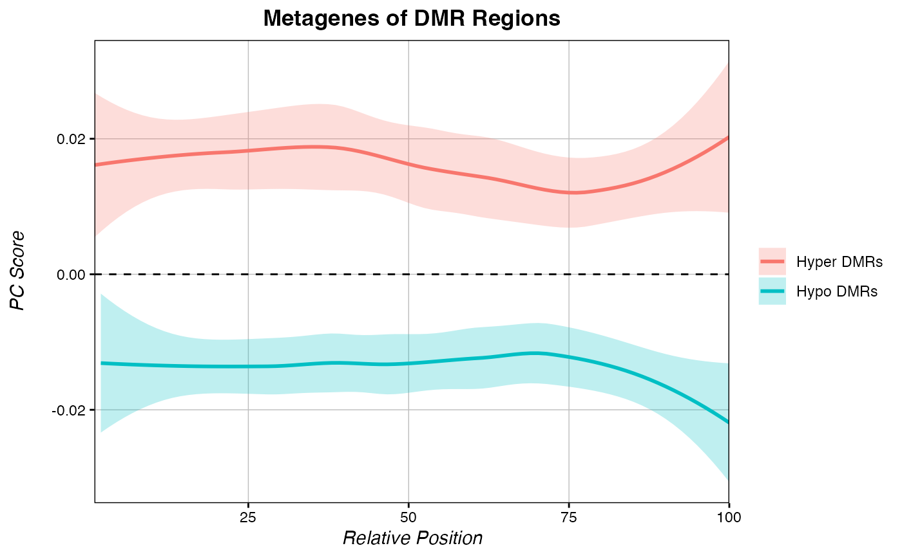

multiple_metagenes.RdPlots multiple metagene object using the raw data generated by score_metagene().
multiple_metagenes(data_list, set_names, title, xaxis, yaxis, legend.title, col, se_alpha)List of score_metagene() raw data output
Character vector of names for score_metagene() object
Output plot title
Output plot x-axis title
Output plot y-axis title
T/F, whether to show legend title
Vector of colours to use for lines
0-1, alpha value for standard error shading
Returns a grob containing a plot of the input metagene data.
ranks <- getPCRanks(eigen, IDs = c("trt", "ctl"), PC = 1)
DMRs <- Get_Novel_DMRs(ranks, 2940, minCpGs=10)
#> Splitting data by chromosome...
#> Bootstrapping background distributions for each chromosome...
#> Compressing nearby seeds...
#> done! Collapsed 2940 seeds to 250 seeds!
#>
#> Expanding DMRs from 250 seeds...
#> Trimming 133 DMRs...
#> done!
# Select all significantly hypomethylated DMRs:
hypo_DMRs <- DMRs[DMRs$FDR <= 0.05 & DMRs$DMR_Zscore < 0,]
# Select all significantly hypermethylated DMRs:
hyper_DMRs <- DMRs[DMRs$FDR <= 0.05 & DMRs$DMR_Zscore > 0,]
# select chrom, start, and end of all hyper DMRs
regions_hypo <- hypo_DMRs[c(1:3)]
regions_hyper <- hyper_DMRs[c(1:3)]
# return.data = T returns raw data instead of a plot:
hyper_metagene <- score_metagene(ranks, regions_hyper, return.data = TRUE)
#> Creating chromDict Object. If you plant to run the score_metagene() function multiple times, it is strongly recommended to generate a chromDict Object with the chromDict() function, and specify it with score_metagene(..., chromDictObj=OBJECT). This is the most computationally intensive part of metagene creation, and only needs to be done once.
hypo_metagene <- score_metagene(ranks, regions_hypo, return.data = TRUE)
#> Creating chromDict Object. If you plant to run the score_metagene() function multiple times, it is strongly recommended to generate a chromDict Object with the chromDict() function, and specify it with score_metagene(..., chromDictObj=OBJECT). This is the most computationally intensive part of metagene creation, and only needs to be done once.
# The multiple_metagenes function plots multiple metagenes
# using a list of raw data objects from score_metagene().
multiple_metagenes(data_list = list(hyper_metagene, hypo_metagene),
set_names = c("Hyper DMRs", "Hypo DMRs"),
title="Metagenes of DMR Regions", legend.title = FALSE)
